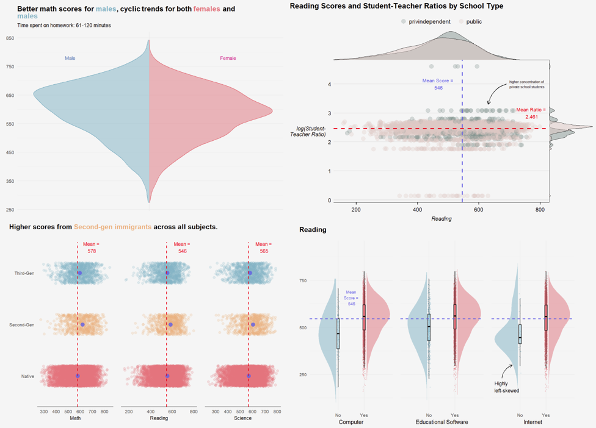

Take-home Exercise 1:

1 Background
2 Task
The 2022 Programme for International Student Assessment (PISA) data was released on December 5, 2022. PISA global education survey every three years to assess the education systems worldwide through testing 15 year old students in the subjects of mathematics, reading, and science.
In this take-home exercise, you are required to use appropriate Exploratory Data Analysis (EDA) methods and ggplot2 functions to reveal:
- the distribution of Singapore students’ performance in mathematics, reading, and science, and
- the relationship between these performances with schools, gender and socioeconomic status of the students.
Visual Considerations
- Raincloud plots are used to capture the density and range of values by expense, with dotplots beneath the half-density plots revealing patterns in consistency
- Separate plots were coded for -ve and +ve transactions, with Education, Food & Recreation and Shelter separated as well. This is due to the wide scale of y-axis values, which made the narrower denIt extends ggplot2 with:
interactive
geomfunctions:geom_point_interactive(),geom_col_interactive, etc.interactive
scalefunctions:scale_color_continuous_interactive(),scale_fill_manual_interactive(), etc.interactive
facetfunctions:facet_wrap_interactive()andfacet_grid_interactive()that both work withlabeller_interactive().interactive
guidefunctions:guide_colorbar_interactive(),guide_colourbar_interactive(),guide_legend_interactive().interactive
themeelements:element_line_interactive(),element_rect_interactive(),element_text_interactive(),label_interactive.sity plots too condensed for the distribution to be viewed in full.
patchworkpackage was used to group the plots together in a single figure, usingplot_layout(heights)to configure height ratio of the overall patched plots
Initial Insights from Line Chart and Table
- Expenditure on education is the lowest, and has remained constant > probably refers to school fees, which is normally a fixed monthly amount
- Expenditure on recreation and food shows monthly variation, and have decreased from Apr 2022 to Feb 2023
- Expenditure on Shelter is significantly higher that other categories, and also remains constant > probably refers to rent
These may be grouped together by percentile, and analysed as age groups instead to give a better overview of different demographics. Each band represents sequential 20th percentiles:
- Lowest 20th Percentile: 18-26
- 20-40th Percentile: 27-35
- 40-60th Percentile: 36-44
- 60-80th Percentile: 45-52
- Top 20th Percentile: 53-60
It extends ggplot2 with:
interactive
geomfunctions:geom_point_interactive(),geom_col_interactive, etc.interactive
scalefunctions:scale_color_continuous_interactive(),scale_fill_manual_interactive(), etc.interactive
facetfunctions:facet_wrap_interactive()andfacet_grid_interactive()that both work withlabeller_interactive().interactive
guidefunctions:guide_colorbar_interactive(),guide_colourbar_interactive(),guide_legend_interactive().interactive
themeelements:element_line_interactive(),element_rect_interactive(),element_text_interactive(),label_interactive.